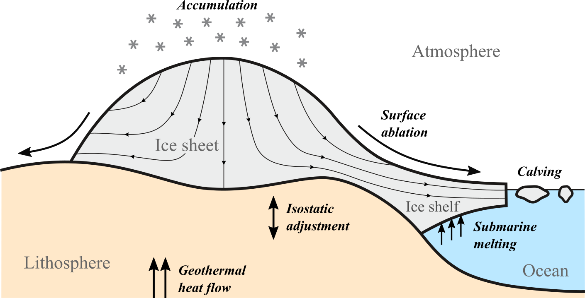
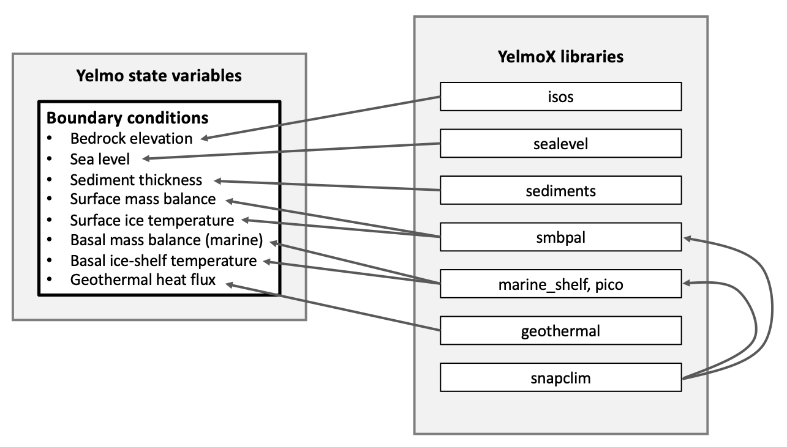

Running with YelmoX
YelmoX is a separate repository that is designed to provide supplementary libraries and programs that allow running ice-sheet simulations with realistic boundary (e.g., climate and ocean) forcing and interactions (e.g., isostatic rebound).


Here you can find the basic information and steps needed to get YelmoX running.
Super-quick start
A summary of commands to get started is given below. For more detailed information see subsequent sections.
# yelmox
git clone git@github.com:palma-ice/yelmox.git
cd yelmox
python3 config.py config/pik_hpc2024_ifx
# yelmo
git clone git@github.com:palma-ice/yelmo.git
cd yelmo
python3 config.py config/pik_hpc2024_ifx
ln -s $EXLIBSRC/exlib ./libs/
cd ..
# FastIsostasy
git clone git@github.com:palma-ice/FastIsostasy.git
cd FastIsostasy
python3 config.py config/pik_hpc2024_ifx
ln -s $EXLIBSRC/exlib ./
cd ..
# coordinates
git clone git@github.com:cxesmc/coordinates.git
cd coordinates
COORDSRC=$PWD
python3 config.py config/pik_hpc2024_ifx
cd ..
# REMBOv1
git clone git@github.com:alex-robinson/rembo1.git
cd rembo1
python3 config.py config/pik_hpc2024_ifx
ln -s $EXLIBSRC/exlib ./libs/
ln -s $COORDSRC ./
cd ..
# Now, compile the default program
make clean
make yelmox
# Link to `ice_data` and `isostasy_data` repositories wherever you have them saved on your system
ln -s /p/projects/megarun/ice_data
ln -s /p/projects/megarun/isostasy_data
# Copy the runme config file to the main directory and modify for your system
cp .runme/runme_config .runme_config
# Run a test simulation of Antarctica for 1000 yrs
./runme -r -e yelmox -n par/yelmo_Antarctica.nml -o output/ant-test -p ctrl.time_end=1e3
That's it!